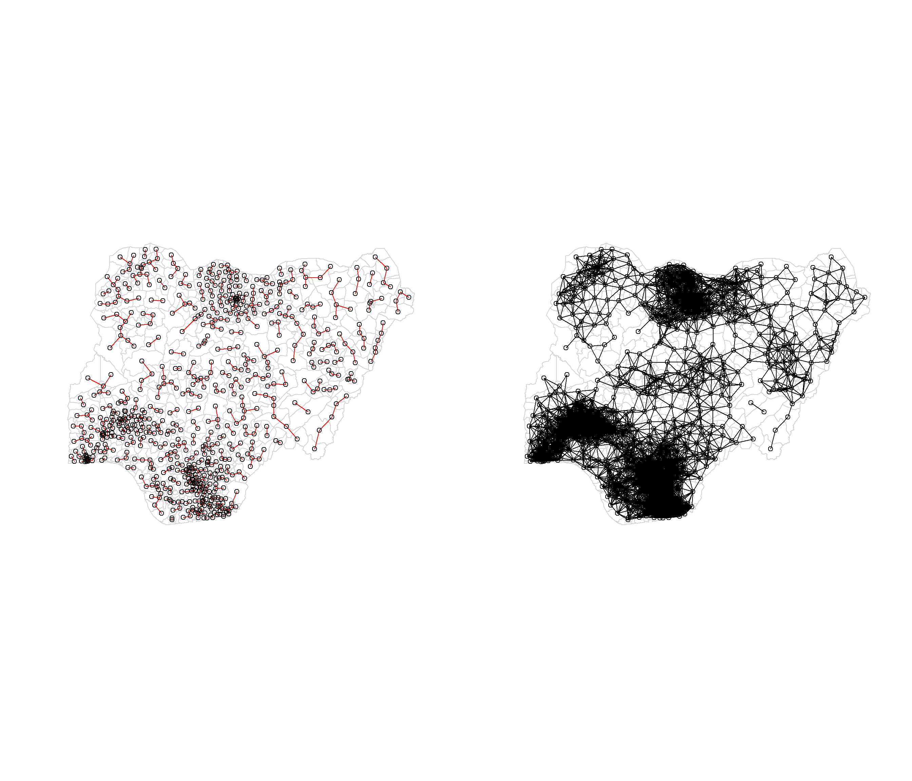
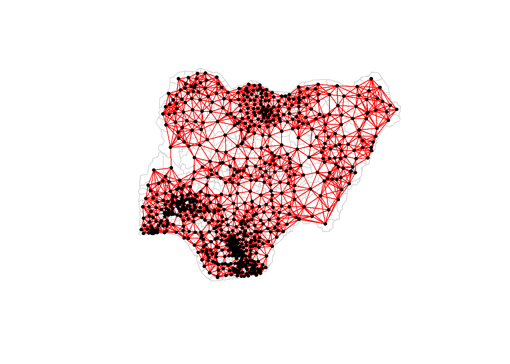
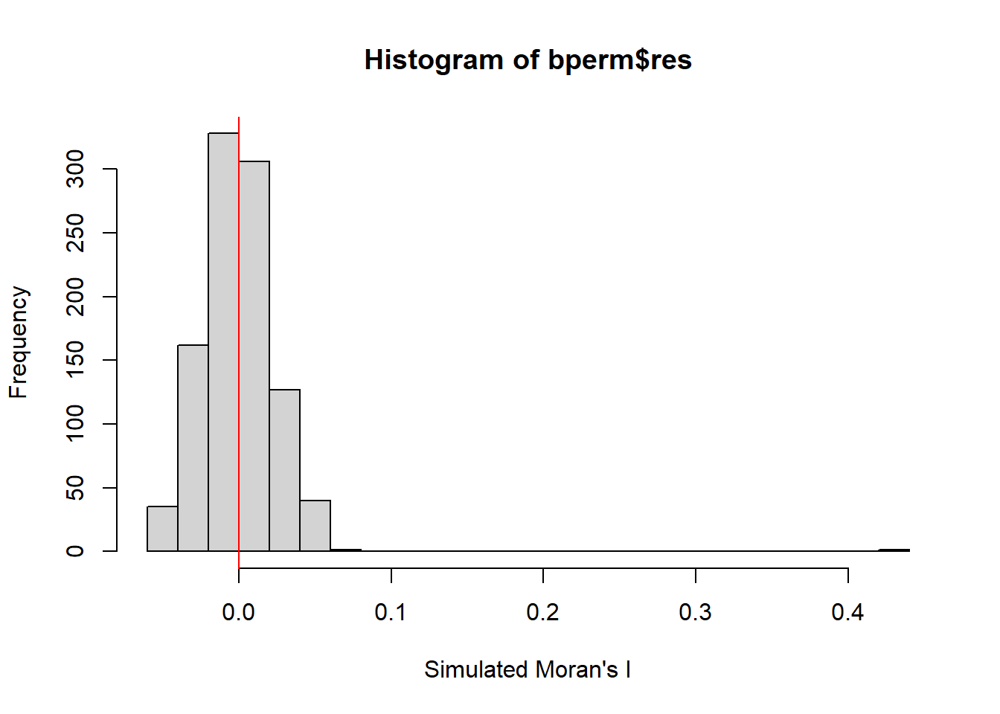
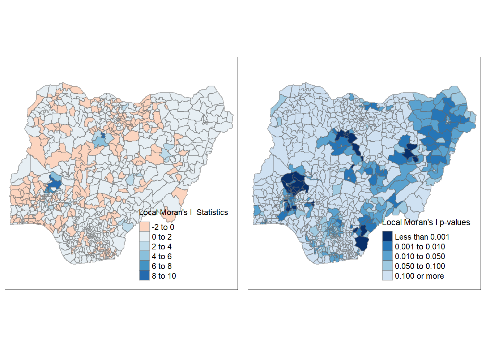
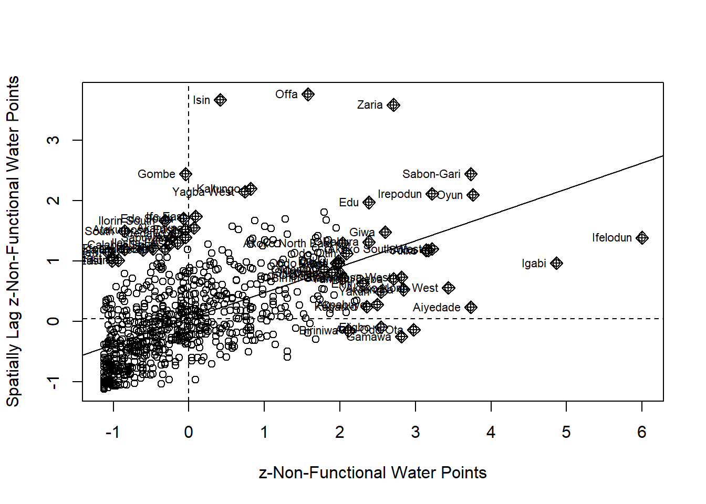

pacman::p_load(sf, spdep, tmap, tidyverse, funModeling)Take-Home_Ex1
1. Overview
Water is an important resource to mankind. Clean and accessible water is critical to human health. It provides a healthy environment, a sustainable economy, reduces poverty and ensures peace and security. Yet over 40% of the global population does not have access to sufficient clean water. By 2025, 1.8 billion people will be living in countries or regions with absolute water scarcity, according to UN-Water. The lack of water poses a major threat to several sectors, including food security. Agriculture uses about 70% of the world’s accessible freshwater.
Developing countries are most affected by water shortages and poor water quality. Up to 80% of illnesses in the developing world are linked to inadequate water and sanitation. Despite technological advancement, providing clean water to the rural community is still a major development issues in many countries globally, especially countries in the Africa continent.
To address the issue of providing clean and sustainable water supply to the rural community, a global Water Point Data Exchange (WPdx) project has been initiated. The main aim of this initiative is to collect water point related data from rural areas at the water point or small water scheme level and share the data via WPdx Data Repository, a cloud-based data library. What is so special of this project is that data are collected based on WPDx Data Standard.
1.1 Objectives
Geospatial analytics hold tremendous potential to address complex problems facing society. In this study, appropriate global and local measures of spatial Association techniques will be applied to reveal the spatial patterns of Not Functional water points. For the purpose of this study, Nigeria will be used as the study country.
In the code chunk below, p_load(0 of pacman package is used to load the following R packages into R environment:
sf
spdep
tmap
tidyverse
funModeling (used for rapid Exploratory Data Analysis)
2. Data Acquisition
2.1 Importing the geospatial data
For this study, two geospatial data will be used:
2.1.1 Importing water point geospatial data
- The water point geospatial data will be downloaded from WPdx Global Data Repositories, specifically the WPdx+ data set will be used. In the code chunk below, we will import the shapefile as simple features data table into R environment using st_read() of sf package. filter() of dplyr will be used to extract water point records of Nigeria.
wp <- st_read(dsn = "data",
layer= "geo_export",
crs = 4326) %>%
filter(clean_coun == "Nigeria")Next, write_rds() of readr package is used to save the extracted sf data table (i.e. wp) into an output file in rds data format, and saved in the data sub-folder.
write_rds(wp, "data/wp_nga.rds")2.1.2 Importing Nigeria LGA boundary geospatial data
- The Nigeria Level-2 Administrative Boundary (also known as Local Government Area) polygon features GIS data will be the second data set used in this study. The data is downloaded from geoBoundaries. In the code chunk below, we will import the Nigeria LGA boundary shapefile data as a simple features data table into R environment using st_read() of sf package.
nga <- st_read(dsn = "data",
layer = "nga_polnda_adm2_1m_salb",
crs = 4326) 2.2 Data Wrangling
2.2.1 Recoding NA values into string
In the code chunk below, replace_na() of tidyr package is used to recode all the NA values in status_cle field into “Unknown”.
wp_nga <- read_rds("data/wp_nga.rds") %>%
mutate(status_cle = replace_na(status_cle, "Unknown"))2.2.2 Exploratory data analysis (EDA)
In the code chunks below, freq() of funModeling package is used to display the distribution of status_cle field in wp_nga.
freq(data = wp_nga,
input = "status_cle")2.2.3 Extracting functional water point
In the code chunk below, filter() of dplyr is used to select functional water points.
wpt_functional <- wp_nga %>%
filter(status_cle %in%
c("Functional",
"Functional but not in use",
"Functional but needs repair"))freq(data= wpt_functional,
input = "status_cle")2.2.4 Extracting non-functional water point
In the code chunk below, filter() of dplyr is used to select non-functional water points.
wpt_nonfunctional <- wp_nga %>%
filter(status_cle %in%
c("Abandoned/Decommissioned",
"Abandoned",
"Non-Functional",
"Non functional due to dry season",
"Non-Functional due to dry season"))freq(data = wpt_nonfunctional,
input = "status_cle")2.2.5 Extracting water point with unknown class
In the code chunk below, filter() of dplyr is used to select water points with unknown status.
wpt_unknown <- wp_nga %>%
filter(status_cle == "Unknown")2.2.6 Performing point-in-polygon count
In the code chunk below, st_intersects() of sf is used to identify water points located in each Nigerian province; lengths() of Base R is used to calculate numbers of water points that fall inside each province, and mutate() of dplyr package is used to derive four fields, namely: (a) total wpt, (b) wpt functional, (c) wpt non-functional, (d) wpt unknown.
nga_wp <- nga %>%
mutate(`total wpt` = lengths(
st_intersects(nga, wp_nga))) %>%
mutate(`wpt functional` = lengths(
st_intersects(nga, wpt_functional))) %>%
mutate(`wpt non-functional` = lengths(
st_intersects(nga, wpt_nonfunctional))) %>%
mutate(`wpt unknown` = lengths(
st_intersects(nga, wpt_unknown)))2.2.7 Saving the analytical data table
In the code chunk below, mutate() of dplyr package is used to drive two fields, namely pct_functional and pct non-functional. To keep the file size small, select() of dplyr is used to retain only fields 3,4,9,10,18,19,20,21,22 and 23.
nga_wp <- nga_wp %>%
mutate(`pct_functional` = `wpt functional` / `total wpt`) %>%
mutate(`pct_non-functional` = `wpt non-functional`/ `total wpt`) #%>%
# select(3:4, 9:10, 18:23)Next, write_rds() of readr package is used to save the extracted sf data table into an output file in rds data format, and saved in the data sub-folder.
write_rds(nga_wp, "data/nga_wp.rds")2.2.8 Assigning EPSG code to the simple feature data frame
One of the common issue that can happen during importing geospatial data into R is that the coordinate system of the source data was either missing (such as due to missing .proj for ESRI shapefile) or wrongly assigned during the importing process.
Using the code chunk below, we will examine the current coordinate system of nga_wp simple feature data frame by using st_crs() of sf package.
st_crs(nga_wp)Although the nga_wpdata frame is projected in WGS84 but when we read until the end of the print, it indicates that the EPSG is 4326. This is a wrong EPSG code because the correct EPSG code for WGS84 should be either 26391, 26392, or 26303
Using the code below, st_transform() of sf package is used to assign the correct EPSG code (which we will select 26391) to nga_wp data frame.
nga_wp26391 <- st_transform(nga_wp,
crs = 26391)Using the code chunk below, we will check the CRS again.
st_crs(nga_wp26391)Next, write_rds() of readr package is used to save the extracted sf data table into an output file in rds data format, and saved in the data sub-folder.
write_rds(nga_wp26391, "data/nga_wp26391.rds")3. Visualising the Spatial Distribution of Water Points
In the code chunk below, qtm() of tmap package is used to plot the thematic maps depicting Nigeria waterpoints quickly, while tmap_arrange() is used to create multiple stand-alone maps .
nga_wp <- read_rds("data/nga_wp.rds")
total <- qtm(nga_wp, "total wpt")
wp_functional <- qtm(nga_wp, "wpt functional")
wp_nonfunctional <- qtm(nga_wp, "wpt non-functional")
unknown <- qtm(nga_wp, "wpt unknown")
tmap_arrange(total, wp_functional, wp_nonfunctional, unknown, asp=1, ncol=2)
4. Computing Contiguity Spatial Weights
Building a neighbours list based on regions with contiguous boundaries
4.1 Computing (QUEEN) contiguity based neighbours
In the code chunk below, poly2nb() of spdep package is used to compute the Queen contiguity weight matrix.
wm_q <- poly2nb(nga_wp, queen = TRUE)
summary(wm_q)Neighbour list object:
Number of regions: 773
Number of nonzero links: 4484
Percentage nonzero weights: 0.7504238
Average number of links: 5.800776
Link number distribution:
1 2 3 4 5 6 7 8 9 10 11 12 13
2 13 53 117 178 156 121 71 41 15 4 1 1
2 least connected regions:
475 505 with 1 link
1 most connected region:
516 with 13 linksThe summary report above shows that there are 773 area units in Nigeria. The most connected area unit has 13 neighbours, while 2 area units only have one neighbour each.
4.2 Visualising contiguity weights
A connectivity graph takes a point and displays a line to each neighboring point. We are working with polygons at the moment, so we will need to get points in order to make our connectivity graphs. The most typically method for this will be polygon centroids. We will calculate these in the sf package before moving onto the graphs.
To get our longitude values we map the st_centroid function over the geometry column of us.bound and access the longitude value through double bracket notation [[]] and 1. This allows us to get only the longitude, which is the first value in each centroid.
longitude <- map_dbl(nga_wp$geometry, ~st_centroid(.x)[[1]])We will do the same for latitude with one key difference, in that we access the second value per centroid with [[2]].
latitude <- map_dbl(nga_wp$geometry, ~st_centroid(.x)[[2]])Now that we have latitude and longitude, we use cbind to put longitude and latitude into the same object.
coords <- cbind(longitude, latitude)Checking the first few observations to see if things are formatted correctly
head(coords) longitude latitude
[1,] 7.371644 5.106900
[2,] 7.350650 5.081346
[3,] 7.807885 5.515729
[4,] 7.610951 5.664240
[5,] 7.584973 5.406009
[6,] 7.401408 5.2905734.2.1 Plotting Queen contiguity based neighbours map
plot(nga_wp$geometry, border = "lightgrey")
plot(wm_q, coords, pch = 19, cex = 0.6, add = TRUE, col= "red")
5. Computing Distance Based Neighbours
The function identifies neighbours of region points by Euclidean distance with a distance band with lower d1= and upper d2= bounds controlled by the bounds= argument. If unprojected coordinates are used and either specified in the coordinates object x or with x as a two column matrix and longlat=TRUE, great circle distances in km will be calculated with the WGS84 reference ellipsoid.
5.1 Determining the cut-off distance
We will first determine the upper limit for distance band by using the steps below:
Return a matrix with the indices of points belonging to the set of the k nearest neighbours of each other by using knearneigh() of spdep.
Convert the knn object returned by knearneigh() into a neighbours list of class nb with a list of integer vectors containing neighbour region number ids by using knn2nb().
Return the length of neighbour relationship edges by using nbdists() of spdep. The function returns in the units of the coordinates if the coordinates are projected, in km otherwise.
Remove the list structure of the returned object by using unlist().
k1 <- knn2nb(knearneigh(coords))
k1dists <- unlist(nbdists(k1, coords, longlat = TRUE))
summary(k1dists) Min. 1st Qu. Median Mean 3rd Qu. Max.
3.001 12.555 20.575 22.026 28.240 71.769 The summary report shows that the largest first neighbour distance is 71.769km, so using this as the upper threshold gives certainty that all units will have at least one neighbour.
5.2 Computing fixed distance weight matrix
Using the code chunk below, we will compute the distance weight matrix using dnearneigh() of spdep.
wm_d72 <- dnearneigh(coords, 0, 72, longlat = TRUE)
wm_d72Neighbour list object:
Number of regions: 773
Number of nonzero links: 18114
Percentage nonzero weights: 3.031485
Average number of links: 23.43338 The summary report above shows that on average, each area unit is nearest in distance to another 23 area units.
5.2.1 Plotting fixed distance weight matrix
Using the code chunk below, we will plot the distance weight matrix.
par(mfrow=c(1,2))
plot(nga_wp$geometry, border = "lightgrey")
plot(k1, coords, add=TRUE, col="red", length = 0.08)
plot(nga_wp$geometry, border = "lightgrey")
plot(wm_d72, coords, add=TRUE)
5.2.2 Computing adaptive distance weight matrix
One of the characteristics of fixed distance weight matrix is that more densely settled areas (usually the urban areas) tend to have more neighbours while the less densely settled areas (usually the rural counties) tend to have lesser neighbours. Having many neighbours smoothes the neighbour relationship across more neighbours.
Using the code chunk below, we will control the numbers of neighbours directly using k-nearest neighbours, either accepting asymmetric neighbours or imposing symmetry. We will set the number of neighbours at 8.
knn8 <- knn2nb(knearneigh(coords, k=8))
knn8Neighbour list object:
Number of regions: 773
Number of nonzero links: 6184
Percentage nonzero weights: 1.034929
Average number of links: 8
Non-symmetric neighbours list5.2.2.1 Plotting distance based neighbours
Using the code chunk below, we can plot the weight matrix.
plot(nga_wp$geometry, border = "lightgrey")
plot(knn8, coords, pch = 19, cex = 0.6, add = TRUE, col = "red")
5.2.3 Row-standarised weights matrix
Next, we will assign weights to each neighboring polygon. In our case, each neighboring polygon will be assigned equal weight (style=“W”). This is accomplished by assigning the fraction 1/(#ofneighbors) to each neighboring county then summing the weighted income values. While this method summaries the neighbors’ values, one drawback is that polygons along the edges of the study area will base their lagged values on fewer polygons thus potentially over- or under-estimating the true nature of the spatial autocorrelation in the data. For this study, we’ll be using style=“W” option.
rswm_q <- nb2listw(wm_q, style = "W", zero.policy = TRUE)
rswm_qCharacteristics of weights list object:
Neighbour list object:
Number of regions: 773
Number of nonzero links: 4484
Percentage nonzero weights: 0.7504238
Average number of links: 5.800776
Weights style: W
Weights constants summary:
n nn S0 S1 S2
W 773 597529 773 281.9605 3193.3326. Application of spatial weight matrix
6.1 Spatial lag with row-standardised weights
We will be computing the average neighbour non-functional wpt value for each polygon. Using the code chunk below, we append the spatially lag non-functional waterpoint values onto the Nigeria sf data frame using left_join().
lag.list <- list(nga_wp$HRname, lag.listw(rswm_q, nga_wp$`wpt non-functional`))
lag.res <- as.data.frame(lag.list)
colnames(lag.res) <- c("HRname", "lag wpt non-functional")
nga_wp <- left_join(nga_wp, lag.res)Using the code chunk below, we will now plot both the non-functional wpt and the spatial lag non-functional wpt for comparison.
nft <- qtm(nga_wp, "wpt non-functional")
lag_nft <- qtm(nga_wp, "lag wpt non-functional")
tmap_arrange(nft, lag_nft, asp=1, ncol=2)6.2 Spatial lag as a sum of neighbouring values
Next, we will calculate spatial lag as a sum of neighboring values by assigning binary weights. This requires us to go back to our neighbors list, then apply a function that will assign binary weights, then we use glist = in the nb2listw function to explicitly assign these weights.
We will start by applying a function that will assign a value of 1 per each neighbor. This is done with lapply, to manipulate the neighbors structure. This applies a function across each value in the neighbors structure.
b_weights <- lapply(wm_q, function(x) 0*x + 1)
b_weights2 <- nb2listw(wm_q,
glist = b_weights,
style = "B")
b_weights2Characteristics of weights list object:
Neighbour list object:
Number of regions: 773
Number of nonzero links: 4484
Percentage nonzero weights: 0.7504238
Average number of links: 5.800776
Weights style: B
Weights constants summary:
n nn S0 S1 S2
B 773 597529 4484 8968 114240With the weights assigned, we will now use lag.listw of spdep to compute a lag variable from our weight and non-functional wpt.
lag_sum <- list(nga_wp$HRname, lag.listw(b_weights2, nga_wp$`wpt non-functional`))
lag.res <- as.data.frame(lag_sum)
colnames(lag.res) <- c("HRname", "lag_sum wpt non-functional")
lag.listw()Using the code chunk below, we will append the lag_sum wpt non functional to the nga_wp sf data frame
nga_wp <-left_join(nga_wp, lag.res)Using the code chunk below, we can now plot both the non-functional water points and spatial lag non-functional water points for comparison.
nft <- qtm(nga_wp, "wpt non-functional")
lag_sum_nft <- qtm(nga_wp, "lag_sum wpt non-functional")
tmap_arrange(nft, lag_sum_nft, asp=1, ncol=2)7. Global Spatial Autocorrelation
7.1 Moran’s I
Using the code chunk below, we will perform the Moran’s I statistics testing by using moran.test() of spdep.
moran.test(nga_wp$`wpt non-functional`,
listw = rswm_q,
zero.policy = TRUE,
na.action = na.omit)
Moran I test under randomisation
data: nga_wp$`wpt non-functional`
weights: rswm_q
Moran I statistic standard deviate = 19.973, p-value < 2.2e-16
alternative hypothesis: greater
sample estimates:
Moran I statistic Expectation Variance
0.4301096187 -0.0012953368 0.0004665373 As p-value is <0.025, we can conclude that it is statistically significant that the distribution of non-functional waterpoints are randomly distributed.
7.1.1 Computing Monte Carlo Moran’s I
Using the code chunk below, we will perform permutation test for Moran’s I statistic by using moran.mc() of spdep. A total of 1,000 simulations will be performed.
set.seed(1234)
bperm = moran.mc(nga_wp$`wpt non-functional`,
listw = rswm_q,
nsim=999,
zero.policy = TRUE,
na.action = na.omit)
bperm
Monte-Carlo simulation of Moran I
data: nga_wp$`wpt non-functional`
weights: rswm_q
number of simulations + 1: 1000
statistic = 0.43011, observed rank = 1000, p-value = 0.001
alternative hypothesis: greaterFrom the output above, as p-value is < 0.025, it supports the earlier statistical conclusion that the distribution of the non-functional water points are indeed randomly distributed.
7.1.2 Visualising Monte Carlo Moran’s I
In the code chunk below, we will examine the simulated Moran’s I test statistics in greater detail. This can be achieved by plotting the distribution of the statistical values as a histogram, using hist() and abline() of R Graphics.
mean(bperm$res[1:999])[1] -0.0009951148var(bperm$res[1:999])[1] 0.0004829448summary(bperm$res[1:999]) Min. 1st Qu. Median Mean 3rd Qu. Max.
-0.0587890 -0.0165490 -0.0019268 -0.0009951 0.0145196 0.0651229 hist(bperm$res,
freq=TRUE,
breaks =20,
xlab="Simulated Moran's I")
abline(v=0, col="red")
8. Cluster and Outlier Analysis
Local Indicators of Spatial Association or LISA are statistics that evaluate the existence of clusters in the spatial arrangement of a given variable. In this instance, we will be studying non-functional water points among census tracts in the Nigerian city local clusters in the rates mean that there are areas that have higher or lower rates than is to be expected by chance alone; that is, the values occurring are above or below those of a random distribution in space.
8.1 Computing local Moran’s I
Using the code chunk below, we will compute local Moran’s I, using the localmoran() function of spdep. It computes Ii values, given a set of zi values and a listw object providing neighbour weighting information for the polygon associated with the zi values.
fips <- order(nga_wp$HRname)
localMI <- localmoran(nga_wp$`wpt non-functional`, rswm_q)
head(localMI) Ii E.Ii Var.Ii Z.Ii Pr(z != E(Ii))
1 -0.3293461319 -1.006443e-03 0.1935434145 -0.746335642 0.4554647
2 -0.0232170719 -2.046812e-05 0.0039399933 -0.369552942 0.7117156
3 0.1049642343 -1.133492e-03 0.1449200709 0.278703106 0.7804727
4 0.4133135297 -6.705952e-04 0.0641649070 1.634311750 0.1021934
5 -0.0138498133 -1.701640e-06 0.0002178059 -0.938330308 0.3480747
6 0.0004439503 -1.071807e-04 0.0164824028 0.004292839 0.9965748The output above from localmoran() function returns a matrix of values whose columns are:
Ii: the local Moran’s I statistics
E.Ii: the expectation of local moran statistic under the randomisation hypothesis
Var.Ii: the variance of local moran statistic under the randomisation hypothesis
Z.Ii:the standard deviate of local moran statistic
Pr(): the p-value of local moran statistic
8.1.1 Mapping the local Moran’s I
Using the code chunk below, we will append the local Moran’s I dataframe (i.e. localMI) onto Nigeria SpatialPolygonDataFrame. The output SpatialPolygonDataFrame is called nga.localMI.
nga.localMI <- cbind(nga_wp, localMI) %>%
rename(Pr.Ii = Pr.z....E.Ii..)8.1.2 Mapping both local Moran’s I values and p-values
Using the code chunk below, we will:
Plot the local Moran’s I values using choropleth mapping functions of tmap package.
Produce a choropleth map of Moran’s I p-values by using functions of tmap package.
localMI.map <- tm_shape(nga.localMI)+
tm_fill(col = "Ii",
style = "pretty",
palette = "RdBu",
title = "Local Moran's I Statistics") +
tm_borders(alpha = 0.5)
pvalue.map <- tm_shape(nga.localMI) +
tm_fill(col = "Pr.Ii",
breaks=c(-Inf, 0.001, 0.01, 0.05, 0.1, Inf),
palette="-Blues",
title = "Local Moran's I p-values") +
tm_borders(alpha = 0.5)
tmap_arrange(localMI.map, pvalue.map, asp=1, ncol=2)Variable(s) "Ii" contains positive and negative values, so midpoint is set to 0. Set midpoint = NA to show the full spectrum of the color palette.
8.2 Creating a LISA Cluster Map
The LISA Cluster Map shows the significant locations color coded by type of spatial autocorrelation. The first step before we can generate the LISA cluster map is to plot the Moran scatterplot.
8.2.1 Plotting Moran scatterplot
The Moran scatterplot is an illustration of the relationship between the values of the chosen attribute at each location and the average value of the same attribute at neighboring locations.
Using the code chunks below, we will plot the Moran scatterplot of non-functional waterpoints by using moran.plot() of spdep.
nci <- moran.plot(nga_wp$`wpt non-functional`, rswm_q,
labels=as.character(nga_wp$HRname),
xlab="Non Functional Water Points ",
ylab="Spatially Lag Non Functional Water Points")The output is split into 4 quadrants. The top right corner belongs to areas that have high non-functional water points and are surrounded by other areas that have the average level of non-functional water points.
8.2.2 Plotting Moran scatterplot with standardised variable
First we will use scale() to center and scale the variable. Centering is done by subtracting the mean from the corresponding columns, and scaling is done by dividing the (centered) variable by their standard deviations. as.vector() will be added to the end to make sure that the data type we get out of this is a vector, that map neatly into the dataframe.
nga_wp_Z <- scale(nga_wp$`wpt non-functional`) %>%
as.vectorUsing the code chunk below, we will plot the Moran scatterplot again.
nci2 <- moran.plot(nga_wp_Z, rswm_q,
labels=as.character(nga_wp$HRname),
xlab="z-Non-Functional Water Points",
ylab="Spatially Lag z-Non-Functional Water Points")
8.3 Preparing LISA map classes
Using the code chunks below, we will prepare the LISA cluster map.